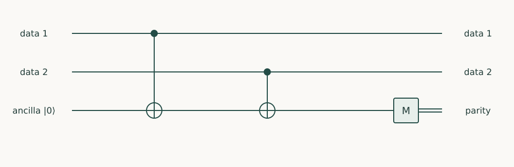

Chapter 18 · Draft lesson
Fault-Tolerant Hardware
What must hardware do to keep an encoded computation reliable while it runs?
In this chapter · 3 sections
Reading guide · preparation and approach
Starting point: Chapters 1–17; physical concepts and approximations are introduced as needed.
Anchor example: Repeated parity measurements with imperfect data and auxiliaries.
This lesson includes explanations, worked examples, and problems with solutions. Advanced results whose proofs are outside the chapter are identified explicitly.
18.1 Syndrome Extraction
A parity measurement should reveal whether two data bits agree without revealing either bit. Implementing that distinction is the first hardware task of error correction.
18.1.1 Physical parity circuits
Prepare an auxiliary in \(\ket0\). Apply CNOT from data qubit 1 to the auxiliary, then from data qubit 2 to the auxiliary, and measure the auxiliary in Z. For data input \(\ket{x,y}\), the recorded bit is \(x\oplus y\). A superposition within one parity sector remains coherent in the ideal circuit. The measurement reveals \(Z_1Z_2\), not the individual Z values.
18.1.2 Measurement faults and repetition
An auxiliary readout error can imitate a data error, so practical syndrome extraction repeats checks and compares their history. Auxiliary faults can also propagate through gates to several data qubits. Gate ordering, reset, and leakage handling therefore matter. Repeated measurement does not automatically make a circuit fault tolerant: the propagation of each plausible fault must be examined.

Problem 18.1. What happens when the parity circuit receives (|00⟩ + |11⟩)/√2?
Worked solution
Both components put the auxiliary in zero, so its measurement leaves their superposition intact in the ideal circuit. Measuring the two data qubits individually would instead reveal which component was present.
18.2 Logical Operations
18.2.1 Code distance and decoding
Code distance is the smallest number of physical Pauli errors that can implement a nontrivial logical operation undetected. With perfect syndrome information, a distance-d code corrects arbitrary errors on up to floor((d−1)/2) qubits. Circuit faults and noisy measurements require a spacetime decoding model. A decoder estimates a correction or a classical frame update from the measured syndrome history.
18.2.2 Gates and auxiliary states
Logical gates must preserve protection during the operation. Some use transversal gates, code deformation, or measurements between encoded patches. Universal computation may require prepared auxiliary states whose production consumes substantial space and time. This chapter does not derive a universal fault-tolerant gate set; its hardware lesson is to include these resources in the workload instead of counting only data patches.
Problem 18.2. How many arbitrary physical-qubit errors can a distance-5 code correct with perfect syndrome information?
Worked solution
At most floor((5−1)/2) = 2. This does not mean that every pair of faulty circuit locations is harmless; faults can propagate to multiple data qubits.
18.3 Hardware Requirements
18.3.1 Leakage, correlation, and latency
Leakage violates a two-level error model and can persist across many checks. Correlated faults can defeat estimates based on independent local errors. Decoder latency can delay feed-forward, while reset failures contaminate later rounds. Benchmark the complete repeating syndrome cycle, including simultaneous operations, and report logical performance as a function of distance under the same experimental conditions.
18.3.2 Thresholds and overhead
A common illustrative below-threshold fit is \(p_L\approx A(p/p_{\rm th})^{(d+1)/2}\) for odd distance. Here \(p\) is a physical error parameter, \(p_{\rm th}\) depends on the code, circuit, noise, and decoder, and \(A\) is a fitted prefactor. This is not a universal law or a guarantee from one average gate fidelity. A threshold theorem requires explicit noise and control assumptions.
Problem 18.3. Use \(A=0.1\), \(p/p_{\rm th}=0.1\). Compare distances 3 and 5 in the illustrative fit.
Worked solution
The estimates are \(10^{-3}\) and \(10^{-4}\). Increasing distance improves this model at the cost of more qubits and operations; a real estimate must validate its noise assumptions.
We can now evaluate a processor through the computation it can carry out, with the full preparation, control, measurement, and correction costs included.
Sources and further study: Fowler et al., surface-code circuits and resources.